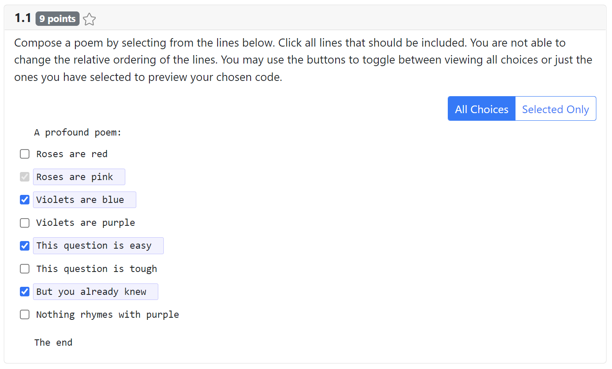

Index
Type aliases
Variables
Type aliases
SLItem
Type declaration
kind: "item"
text: string
Optional forced?: boolean
SLGroup
Type declaration
kind: "group"
items: SLItem[]
Optional title?: string
SLSpecification
A select lines response gives students a sequence of lines of code and asks them to choose the ones that are correct and should become part of a final solution. The relative ordering of the lines is fixed, but each may be turned on/off. Lines may be "forced", meaning they cannot be turned off and are always included in the final solution. A "line" may in fact contain several lines if its specified content contains newline characters.
The response is rendered as a sequence of lines with checkboxes. Clicking a line toggles whether it is selected or not. Students may also preview their final solution, composed of only the selected lines.
Here's an example of a question with a select lines response.


export const Question_Sample_Select_Lines : QuestionSpecification = {
question_id: "sample_select_lines",
tags: [],
points: 9,
mk_description:
`
Compose a poem by selecting from the lines below.
Click all lines that should be included. You are not able to change the
relative ordering of the lines. You may use the buttons to toggle between
viewing all choices or just the ones you have selected to preview your
chosen code. When finished, the **selected lines should form a working
function** that performs a **deep copy** where appropriate and **avoids
undefined behavior or memory leaks**. Some lines contain **mistakes**
or are **unnecessary** for the function - these lines should not be selected.
`,
response: {
kind: "select_lines",
code_language: "cpp",
header: "A profound poem:",
choices: [
{
kind: "item",
text: "Roses are red",
forced: false
},
{
kind: "item",
text: "Roses are pink",
forced: true
},
{
kind: "item",
text: "Violets are blue",
forced: false
},
{
kind: "item",
text: "Violets are purple",
forced: false
},
{
kind: "item",
text: "This question is easy",
forced: false
},
{
kind: "item",
text: "This question is tough",
forced: false
},
{
kind: "item",
text: "But you already knew",
forced: false
},
{
kind: "item",
text: "Nothing rhymes with purple",
forced: false
},
],
footer: "The end",
sample_solution: [1, 2, 4, 6]
}
}
Select Lines Submissions
A submission for a select lines response is an array of numbers corresponding to the indices
of selected lines. See SLSubmission for details.
Type declaration
kind: "select_lines"
The discriminant "select_lines" is used to distinguish select lines specifications.
code_
language: string The language to use for syntax highlighting. Specify the alias for any highlightjs supported language.
choices: (SLGroup | SLItem)[]
The "lines" of code to present as choices for the student.
Optional header?: string
Code shown above the set of lines students select from.
Optional footer?: string
Code shown below the set of lines students select from
Optional sample_
solution?: Exclude<SLSubmission, typeof BLANK_SUBMISSION> A sample solution for this response.
Optional default_
grader?: GraderSpecificationFor<"select_lines"> A default grader for this response.
SLSubmission
A submission for a select lines response is an array of numbers corresponding to the indices of selected lines. Note that any "forced" items will always be included in a submission. The submission may also be BLANK_SUBMISSION if no items were selected.
Variables
SL_
Type declaration
parse: (rawSubmission: undefined | null | string) => SLSubmission | typeof MALFORMED_SUBMISSION
Parameters
rawSubmission: undefined | null | string
Returns SLSubmission | typeof MALFORMED_SUBMISSION
render: (response: SLSpecification, question_id: string, question_uuid: string, skin?: ExamComponentSkin) => string
Parameters
response: SLSpecification
question_id: string
question_uuid: string
Optional skin: ExamComponentSkin
Returns string
activate: (responseElem: JQuery<HTMLElement>) => void
Parameters
responseElem: JQuery<HTMLElement>
Returns void
extract: (responseElem: JQuery<HTMLElement>) => typeof BLANK_SUBMISSION | number[]
Parameters
responseElem: JQuery<HTMLElement>
Returns typeof BLANK_SUBMISSION | number[]
fill: (responseElem: JQuery<HTMLElement>, submission: SLSubmission) => void
Parameters
responseElem: JQuery<HTMLElement>
submission: SLSubmission
Returns void
One of the "lines" of code that may be toggled on/off in a select lines response. If
forcedis specified as true, the item will appear as selected and can not be toggled off (it will always be included in the solution).